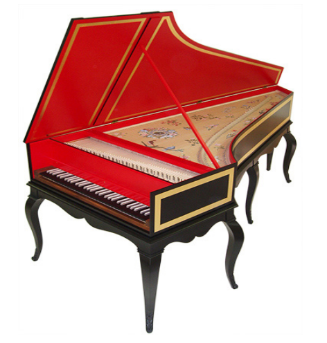

Instrumentos de cuerda
Las cuerdas desempeñan un papel esencial en las orquestas clásicas. Los violines, violas, violonchelos y contrabajos se utilizan para sonidos ricos y expresivos.

Estos cuatro instrumentos tienen características únicas. Por ejemplo, cuanto más pequeño es el instrumento, como el violín, más agudo es su tono. Por lo tanto, el violín es el instrumento más agudo de los cuatro, mientras que el contrabajo es el más grave.
Tener estos cuatro instrumentos con diferentes tonalidades en una orquesta crea armonía y evoca diferentes emociones según el tono deseado.
También existen otros tipos de instrumentos de cuerda. En la música clásica y en las orquestas, encontramos especialmente el clavecín y el piano.
Específicos de la música europea, los clavecines alcanzaron su apogeo y generaron un vasto repertorio durante los siglos XVII y XVIII, antes de caer en desuso a lo largo del siglo XIX. Han recuperado progresivamente la popularidad entre músicos y público desde principios del siglo XX.
El piano, mucho más conocido en las orquestas modernas y como instrumento solista, pertenece a los instrumentos de cuerda percutida. Por lo tanto, se encuentra en un punto intermedio entre los instrumentos de cuerda y las percusiones.